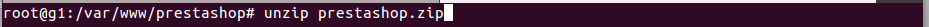

Tutorial de Instalación de Prestashop
Prestashop es una plataforma donde cualquier empresa crean y gestionan sus tiendas online. Prestashop tiene el convencimiento de que cualquier empresa, tanto pequeñas como grandes, deben tener la posibilidad de tener su propia tienda online sin gastos, por ese motivo su plataforma es 100% gratuita.
Para que Prestashop funcione perfectamente se deben cumplir ciertos requisitos:
1.1. Para que Prestashop funcione, debemos instalar un Servidor Web. En nuestro caso, instalaremos Apache2 a través del siguiente comando:
# sudo apt install apache2
2.1. Para guardar todos los datos de nuestra tienda, debemos tener una base de datos. Para ello nos descargamos mysql server y client. Gracias a ellos, crearemos y gestionaremos nuestra base de datos. Usaremos el comando:
$ sudo apt-get install mysql-server mysql-client
2.2. Una vez instalados, entraremos dentro de mysql usando este comando:
$ mysql -u root -p
2.3. Y para finalizar, crearemos una base de datos para nuestra prestashop, junto con un usuario al que le daremos todos los privilegios sobre esa base de datos
Crear Base de Datos:
CREATE DATABASE prestashop;
Crear usuario:
CREATE USER ‘prestashop’ IDENTIFIED BY ‘admingrupo1’;
Dar privilegios al usuario:
GRANT ALL PRIVILEGES ON prestashop.* TO ‘prestashop’;
3.1. Ahora nos toca instalar php y las dependencias necesarias para el funcionamiento correcto de owncloud. Para instalar php usamos el comando:
$ sudo apt-get install php7
3.2. Y finalmente instalamos las dependencias*.
(*)¡ Atención! Dependiendo de la versión de PHP que tengas tendrás que poner detrás de cada paquete la versión de PHP que tengas, ejemplo: php(Version PHP)-curl → php7.1-culr
$ sudo apt install -y libapache2-mod-php7.1 php7.1-gd php7.1-json php7.1-mysql php7.1-curl php7.1-intl php7.1-mcrypt php-imagick php7.1-zip php7.1-xml php7.1-mbstring
4.1. Con esto haremos que Prestashop funcione con normalidad.
# sudo a2enmod rewrite
# sudo a2enmod headers
5.1. Finalmente instalaremos Prestashop, para ello, iremos a la carpeta html
# cd /var/www/html
5.2. Creamos un directorio para Prestashop:
# mkdir prestashop
5.3. Damos todos los permisos sobre el directorio de Prestashop:
# chmod -R 777 prestashop
5.4. Entramos en el directorio:
# cd prestashop
5.5. Nos descargamos Prestashop:
# wget https://download.prestashop.com/download/release /prestashop_1.7.1.1.zip
5.6. Descomprimimos lo descargado:
# unzip prestashop_1.7.1.1.zip

6.1. Ahora toca configurar Prestashop y listo. Desde nuestro navegador web, iremos a la barra de navegación y escribiremos en ella de esta manera: IP/prestashop/
Si no nos acordamos de nuestra IP, podemos buscarla usando el comando hostname -I o si no la podemos ver también con ifconfig.
10.9.53.45/prestashop.
6.2. Dentro de la dirección, solo tenemos que completar los requeistos que nos pongan en cada ventana:
1º escogeremos el idioma.
2º aceptaremos licencia: Acepto los términos y condiciones arriba indicados
3º comprobaremos que cumplimos: Compatibilidad del sistema
4º facilitaremos los datos de la tienda.
5º indicaremos los datos de la Base de Datos que hemos creado antes y le daremos a comprobar, si todo sale correcto seguimos adelante
6º se esta instala nuestro Prestashop, veremos una barra de progreso como la siguiente.
Cuando acabe veremos esta pantalla:
6.3. Antes de entrar a tienda o administrador hay que ejecutar:
$ rm -R install
Para acceder a nuestra sesión de Administrador tendremos que mirar la carpeta /admin que durante la instalación ha sido renombrada a un nombre identificativo ÚNICO para tu tienda (por poner un ejemplo, /admin7890).